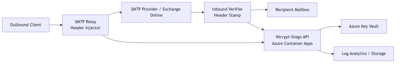

Azure Deployment (Institutional Grade)¶
Overview This guide outlines a reference architecture for running Nicrypt‑Stego in Azure.
Recommended Components - Azure Container Apps or App Service (API) - Azure Key Vault (JWT secrets, nicrypt keys) - Azure Storage or Log Analytics (audit logs) - Azure Email Communication Services or Exchange Online (mail)
Reference Flow 1) Outbound mail passes through a relay (or Logic App) that injects X‑Provenance headers. 2) Inbound mail is verified by a header verification function. 3) Verification result is stamped as X‑Provenance‑Verified.
Deployment Steps (High Level) 1) Containerize the API. 2) Deploy to Azure Container Apps. 3) Store JWT secrets and ENC keys in Key Vault. 4) Configure outbound relay to call /crypto/encrypt for header creation. 5) Configure inbound verification to call /provenance/verify_headers.
Minimal Environment Variables
API_BASE=https://<your-app>.azurecontainerapps.io/v1
JWT_SECRET=<stored in Key Vault>
ENC_PASSWORD=<stored in Key Vault>
ENC_SALT=<stored in Key Vault>
Notes - Use managed identity for Key Vault access. - Enforce HTTPS only. - Add rate limiting and IP allowlists for institutional networks.
Scripts and Diagram
- poc/azure_deploy.sh for Azure CLI deployment.
- docs/AZURE_ARCHITECTURE.mmd for reference architecture.
- docs/AZURE_ARCHITECTURE.png rendered diagram.
Diagram (Rendered)
